Ordem Paranormal: Calamidade é a quarta temporada da série Ordem Paranormal, continuação de Ordem Paranormal: Desconjuração.[1] É uma campanha de RPG de mesa baseada no Sistema de Ordem Paranormal, criado pelo mestre junto da equipe de Skyfall RPG (Pedro Coimbra e Silvia Sala) e da equipe de Tormenta 20 (Felipe Della Corte e Guilherme Dei Svaldi).[2] Mestrada pelo streamer, diretor criativo e roteirista de Enigma do Medo, Cellbit, é protagonizada por dois lados: do lado da Ordem, sendo Antônio Pontevedra, Arthur Cervero, Carina Leone, Dante, Rubens Naluti e posteriormente Joui Jouki; do lado de Kian, sendo Artemis Deordelin Rodrigues, Boris Lukic, Damir Lukic, Gal e Theodore Bagwell.
A campanha foi anunciada previamente no último episódio de Desconjuração, mas foi anunciada oficialmente após o ARG de Calamidade no dia 29 de agosto de 2021. De acordo com o vídeo de anúncio, essa é a primeira temporada de RPG do universo feita presencialmente.
Todos os episódios são transmitidos às 18 horas de todo sábado na Twitch do Cellbit. Às terças, ocorre a reprise dos mesmos, também na Twitch, enquanto na quinta eles são disponibilizados no Youtube, no canal Lives do Cellbit. Como adicional da temporada, todas as quintas-feiras, às 17 horas na Twitch do Cellbit, ocorre um programa de perguntas e respostas sobre o RPG chamado Transcendendo, comandado por Leo Santi.
Dez meses se passaram após o retorno de Kian. Nenhum sinal de qualquer interferência no equilíbrio. Mas uma nova pista faz a Ordo Realitas começar a agir novamente. Um antigo caso de Arnaldo Fritz, relatando sobre uma entidade descrita como "O Diabo", reúne uma nova equipe de agentes, composta pelo pequeno e inteligente Rubens Naluti, o agente ex-aposentado Antônio Pontevedra, a promissora Carina Leone, filha do líder de uma máfia italiana de agentes paranormais, e os veteranos Arthur Cervero e Dante. Juntos, eles devem pesquisar mais a fundo sobre o caso enquanto continuam a busca pelo poder das Relíquias da Calamidade.
Em paralelo, Kian, junto de sua própria equipe de marcados, vai atrás das Relíquias da Calamidade, para conseguir completar seu plano de destruir o paranormal. O grupo é liderado por Gal, composto pelos irmãos Damir Lukic e Boris Lukic e pelos canibais Artemis Deordelin Rodrigues e Theodore Bagwell.
Uma nova equipe de agentes é designada para retomar um antigo caso de Arnaldo Fritz. Os veteranos Arthur Cervero e Dante se juntam a Rubens Naluti, Antônio Pontevedra e Carina Leone para seguir as pistas da possível entidade descrita como "O Diabo" enquanto buscam informações sobre as Relíquias da Calamidade.
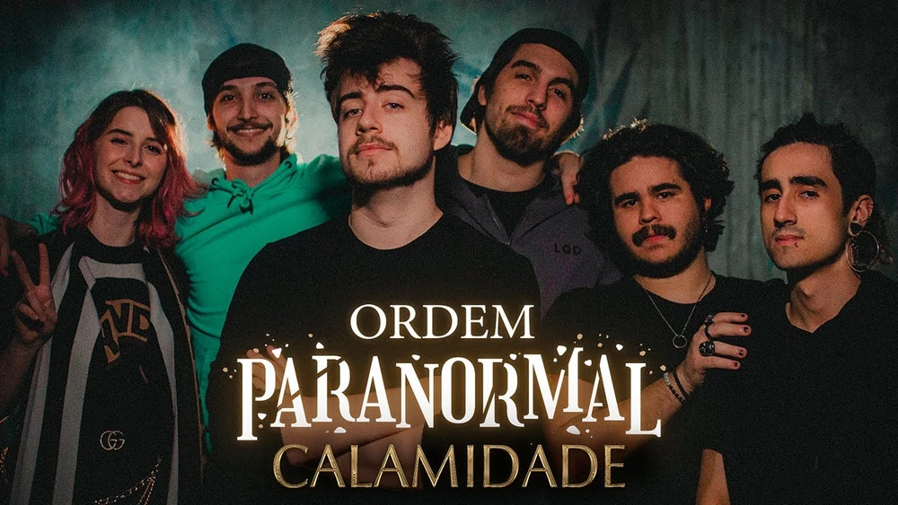A nova equipe retorna à base da Ordem para prosseguir na investigação sobre uma entidade diabólica e sua relação com as Relíquias da Calamidade. Uma pista vinda do grimório de Arnaldo Fritz leva os agentes para a mansão da Família Leone, na Itália, onde um tenebroso pacto os espera.
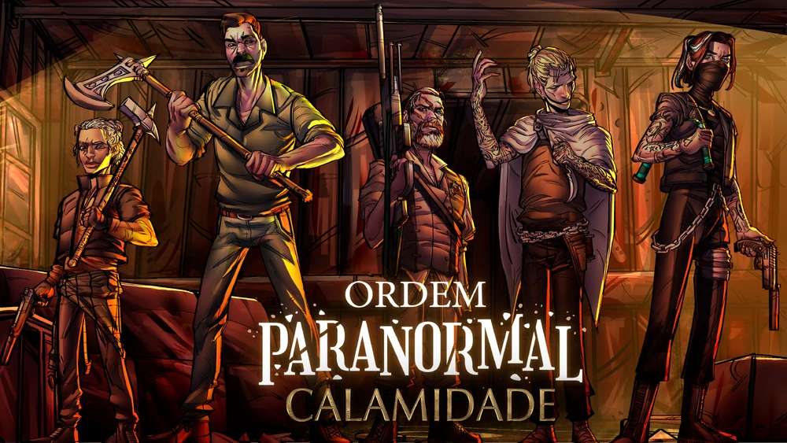Toda história tem dois lados. A invasão à Mansão Leone, na Itália, inicia a história dos Marcados de Kian em busca de informações sobre as Relíquias da Calamidade. Mas, logo, algo além de seus poderes surge em meio às sombras, com um olhar raivoso por vingança.
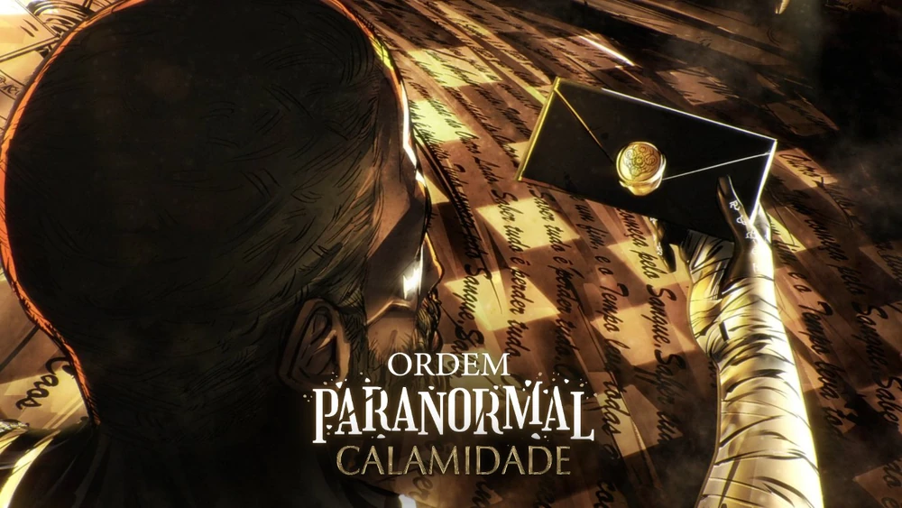Em um clima de luto, pactos e possíveis traições, os agentes continuam sua investigação na mansão da Família Leone. Carina se sente chamada pelo Outro Lado, onde se vê prestes a descobrir sobre a conexão com a sua marca.
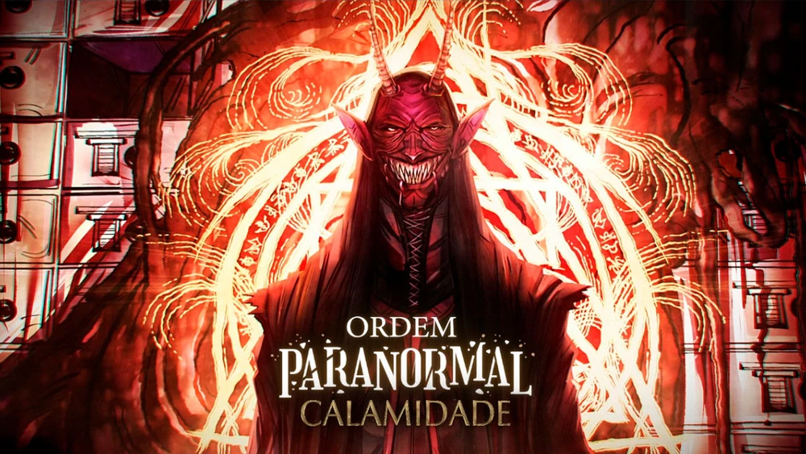A Ordo Realitas se transfere para a Mansão Leone, para continuar a procurar pelas Relíquias da Calamidade. Uma nova pista vinda das páginas do grimório de Arnaldo Fritz leva os agentes da Ordem até um local conhecido por tantos, manchado pelo sangue, que se recusa a ruir pelo tempo e é regido pelo caos: O Coliseu.
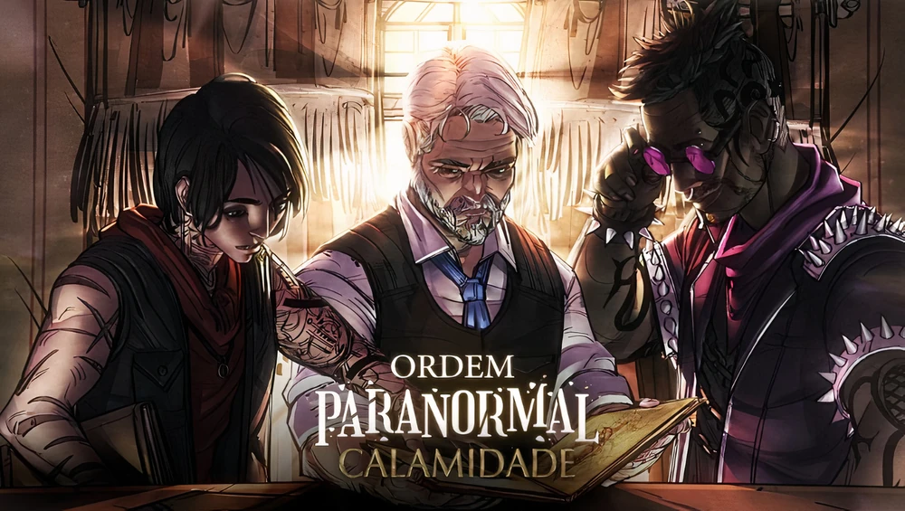A Equipe Abutres continua a investigação do Coliseu, agora aliados aos poderes das sombras de Joui Jouki. No entanto, ao descerem para a porta de Semper Clausa, eles terão que confrontar as memórias do passado para poder entender a história da Ordem da Calamidade.
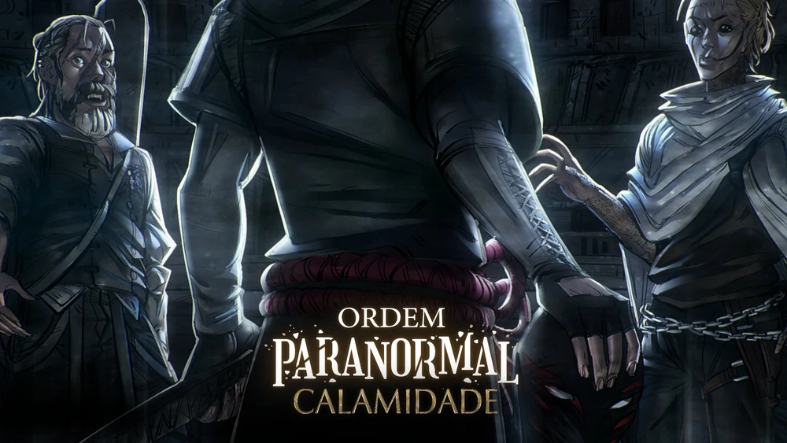Os jogos começaram. A Equipe Abutres enfrenta os jogos de Amphitruo enquanto incorporam os guerreiros de Ordo Calamitas, para saber mais sobre as Relíquias da Calamidade. Entretanto, algo mais importante envolvendo o passado da Ordo Realitas os espera no fim do jogo.
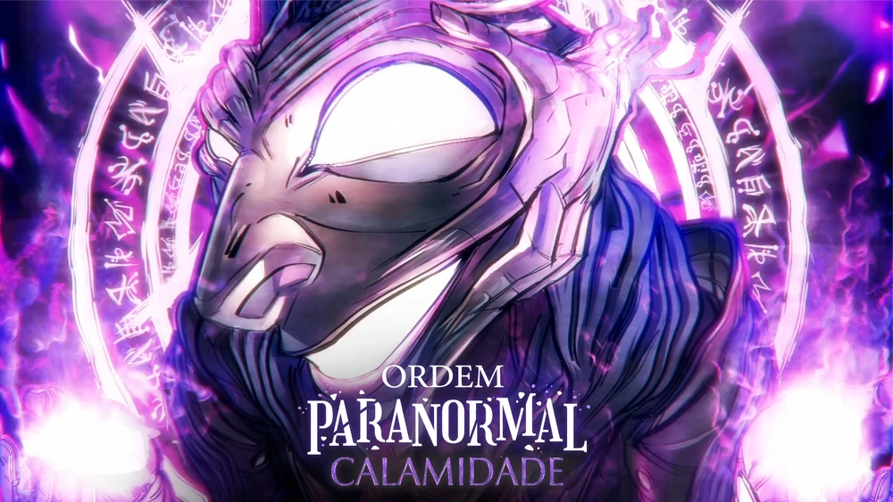As regras estão mudando. Kian guia os Escriptas pelas ruínas de Domus Aurea para encontrar informações sobre a relação das Relíquias da Calamidade e Ordo Calamitas. Entretanto, a mitologia do local promete dificultar o trabalho de seus Marcados.
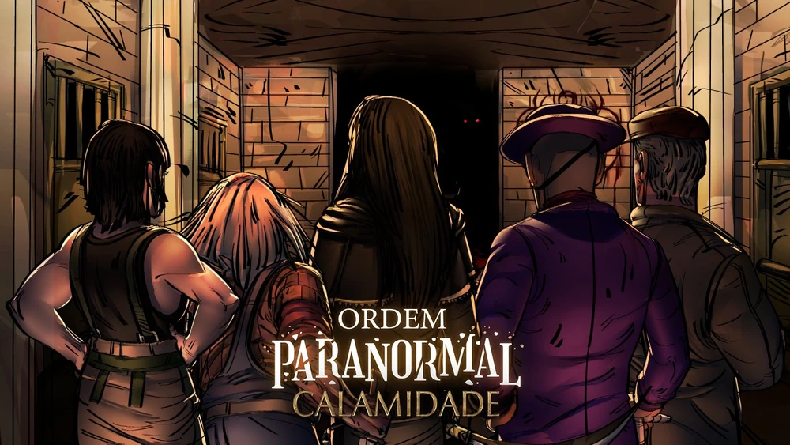Entre brigas, escolhas e decisões a se fazer, a Equipe Abutres se vê envolvida em um dilema urgente: decidir o destino da Calamidade e escolher com quem se aliar na guerra.
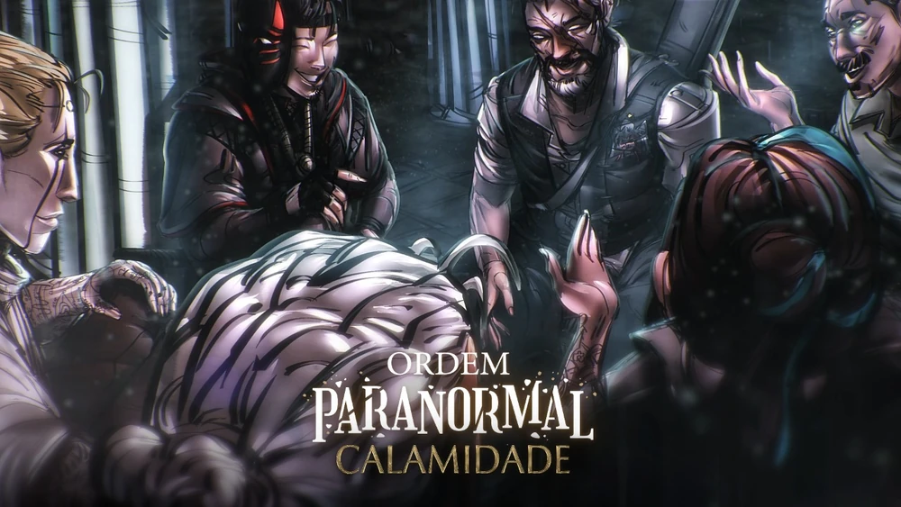Após uma intensa batalha pelos corredores de Ordo Calamitas, a Equipe Abutres tira um tempo para descansar e se recuperar. Mas logo, um novo desafio surge a sua frente: fazer um relatório de perdas e traições para um cansado Senhor Veríssimo.
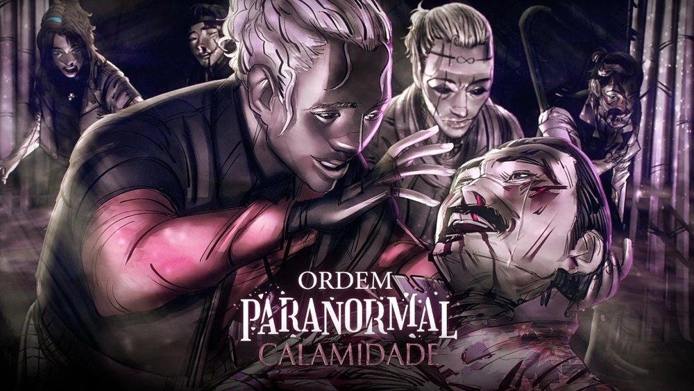Arthur, Balu e Rubens se unem aos membros dos Hell Hunters e da Obscurité para defender a Mansão Leone de uma invasão comandada por escriptas ligados ao Tempo.
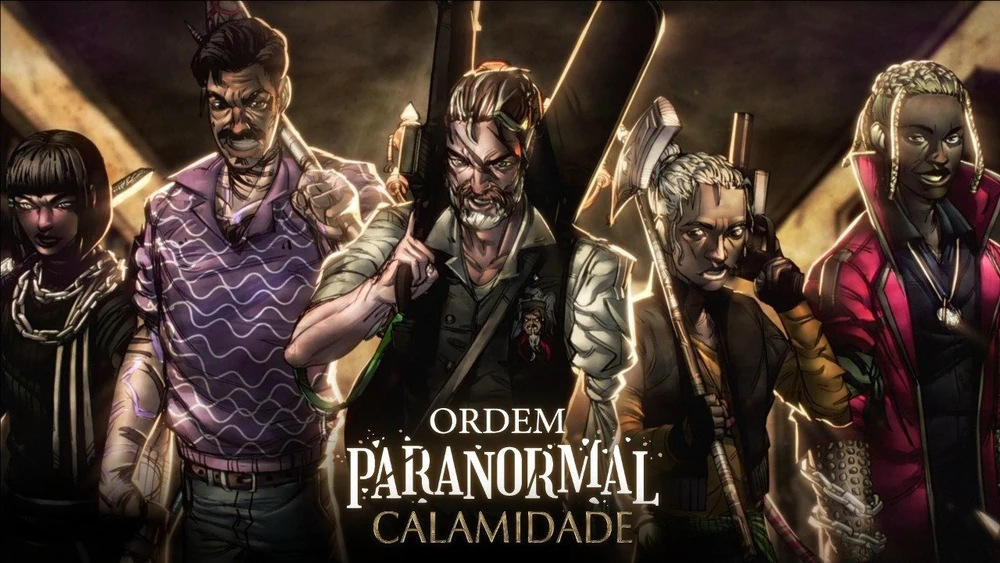A Guerra começou. Enquanto a Ordo Realitas entra em fogo cruzado com os Escriptas, Joui, Carina e Dante rumam ao centro da arena do Coliseu para combater Kian e seus Marcados.
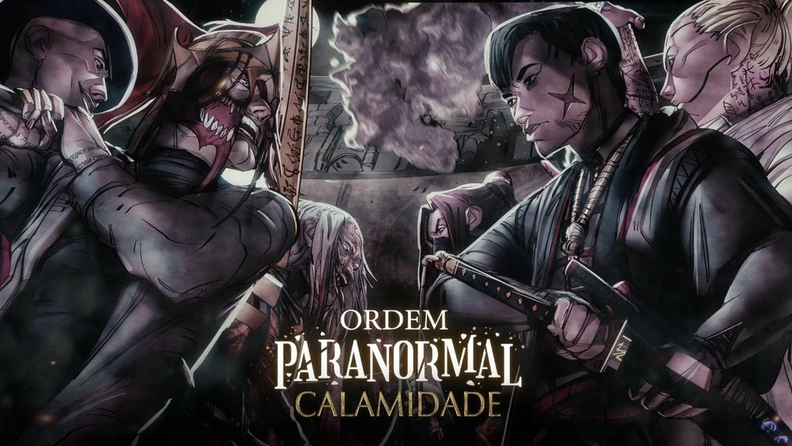Os olhos de Kian e dos agentes da Ordo Realitas continuam a se cruzar na batalha do Coliseu. E o futuro reserva muito mais mistérios a se descobrir.
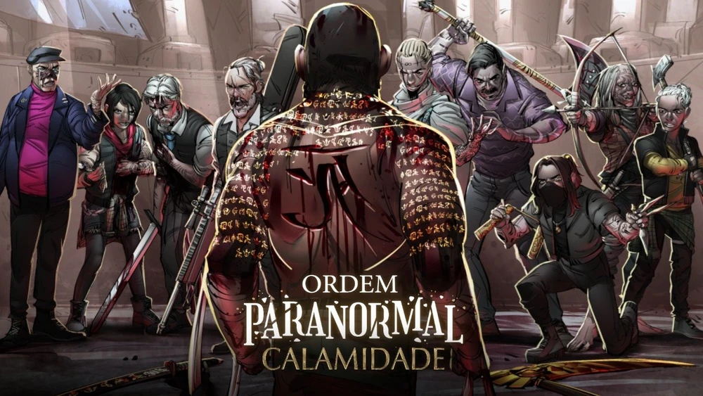